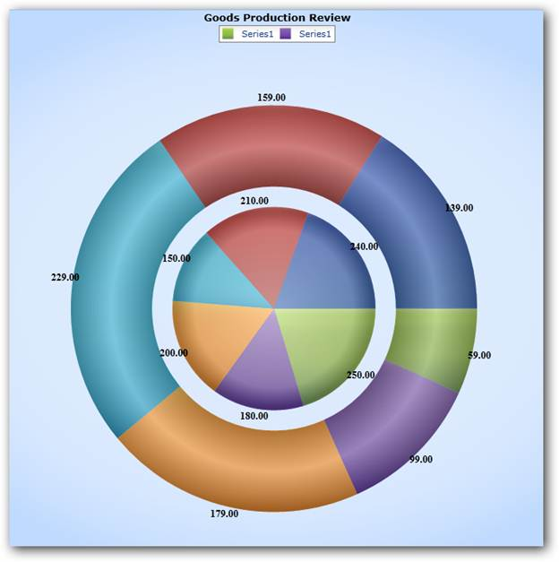

Multiple Pie Series enables displaying more than one series in the same Chart Area. This avoids overlapping of series. Legend can be added for the Series or the Series’ Segments as needed. Adornments can be added for both the Series and the Series’ segments.
Use Case Scenarios
This feature enables you to compare data.
Properties
Table 3: PropertyTable
|
Property |
Description |
Type |
Data Type |
Reference links |
|
PieCoefficient |
Used to set the coefficient of space between the series. |
Attached |
Double |
NA |
Adding Multiple Pie Series
To add Multiple Pie Series, set the Chart the type as Pie, and add multiple series to the chart. It will be added as a Multiple Pie Series.
Following code illustrates this:
|
[Xaml]
<syncfusion:ChartSeries Name="series31" Label="Revenue” Type="Pie" /> <syncfusion:ChartSeries Name="series32" Label="Expenses” Type="Pie" /> |
|
[C#]
ChartArea area = new ChartArea(); area.Series.Add(new ChartSeries() { Type = ChartTypes.Pie }); area.Series.Add(new ChartSeries() { Type = ChartTypes.Pie }); |
Sample Link
To view samples:
1) Open the Syncfusion Dashboard.
2) Click the WPF drop-down list and select Explore Samples.
3) Navigate to Chart Area > Multiple Chart Area.

Figure 48: Multiple Pie Series